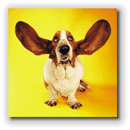
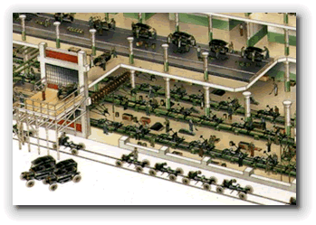
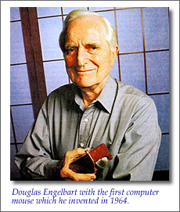
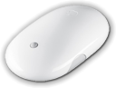
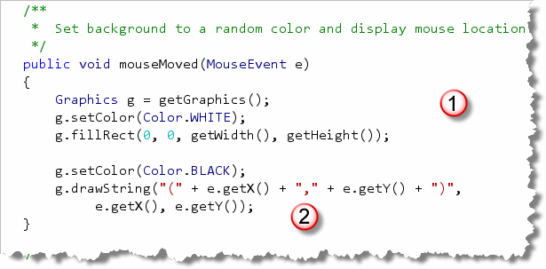
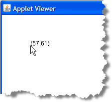
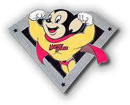
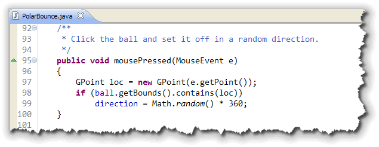
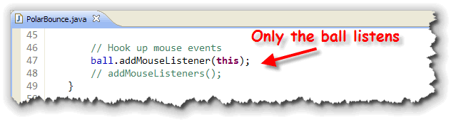

Not only can you send messages to an object, as you've done when you told yourGraphics
object to use a different font, or asked your GImage
object to change its location, but things in the outside world
can send messages to your graphical Java programs, provided that
your programs are prepared to listen.
You can tell your graphical programs "listen" for all sorts
of outside events. Every time you move your mouse over your
applet or ACM GraphicsProgram, your computer
sends a message to your program saying,
"Somebody moved a mouse over you."
The name of this message is mouseMoved, and you can
respond when that happens by adding your own
mouseMoved() method to your program, containing
the actions that you'd like to occur.
This type of message is called an event, and, by writing a method in response (called an event handler), you can arrange to do something when the event occurs.
In this section, we'll look at the practical steps you need to do to handle both mouse events like this, (as well as button clicks). If some of this seems strange, don’t worry. We'll be coming back to event-handling in depth a little later, when you learn about interfaces. For right now, you’ll just get an overview of only a few events, so that you'll be able to write some interesting programs.
Event-Driven vs. Sequential Computing

Sequence, selection, and iteration are the basic building blocks of structured programming. In fact, from day one of this course, you've learned to write programs where you get some input, process it, and then display the results in a strictly linear fashion.Input-Processing-Output has been at the center of the computing we've done during the first half of the course, and structured programming like this is very successful when applied to linear problems like processing the monthly payroll or sending out a set of utility bills. It's easy to see how you can feed a list of employees and their hours into one end of a program and get a pile of paychecks out the other.
Organizing this type of program like an assembly line works very well.
But how do you apply the linear model of an assembly line to your
Web browser? Where is the beginning? Where's the end?
When it comes to interactive software, using a linear
organization, where programs are simply a collection
of procedures that operate on data in a sequential manner,
just doesn't work as well. As you saw in
Section 3.4—Object-Oriented Concepts, a
better method of organization is needed, and that's where
OOP (Object-Oriented Programming)
comes in.
 However, even if you use objects to construct your Web browser
or your word processor you still won't find any well defined sequence
of actions: there is no clearly defined order of execution.
However, even if you use objects to construct your Web browser
or your word processor you still won't find any well defined sequence
of actions: there is no clearly defined order of execution.
Does this mean that such programs simply execute all of the statements in their code and then stop. No, not at all. Most of the programs you work with on your computer are not linear, but are examples of reactive or event-driven systems.
History of Event-Driven Systems

Most computer systems involve some sort of interaction with the user of the program. In bygone years, (that is, in the 1960s through 1980s), if you wanted to write an interactive or event-driven program, you were responsible for reading the keyboard and the mouse yourself.Normally the code that did this would be placed in a large, "endless" loop that continuously monitored or "polled" those devices. The problem with this scheme is that each program took exclusive control of the mouse and keyboard so that other programs couldn't use them.
When computers first started to use hard disks, a similar problem arose. If my program took control of the hardware and wrote data to track 50, sector 27, how was your program supposed to know that, and avoid overwriting my files?
In response to this software developers invented the operating system that allows us all to work with a "virtual" file system, rather than working with the actual disk-drive and controller hardware.
Event-Driven Java

In an event-driven, graphical operating system, like the Mac OSX, Windows, or X Windows in the Unix world, the mouse, keyboard, and display all belong to the operating system, rather than to your program. If the user moves her mouse over one of the windows you've created, or if the user clicks on a button on your form, or types a character into a text field, then the operating system notifies you telling you that such an event has occurred.For Java, this creates a little bit of a problem. Java programs should run, unchanged, on the Mac and on your Linux or Windows machine, yet each of these operating systems has different and incompatible event notification systems. The solution the designers of Java arrived at was to create their own event handling system that sits on top of the native system provided by your operating system. This Java event system is integrated with the Abstract Windowing Toolkit or AWT.

The earliest Java event model, introduced in Java 1.0, was a "hierarchical broadcast" model, which didn't really work well for larger programs. In Java 1.1, the early model was replaced by a new "publish-subscribe" model, usually called the Java 1.1 event model, even though it's still used in the latest version of Java.
The Java 1.1 event model, (also known as the delegation model), works like subscribing to a newsletter or magazine. You tell a component to notify you when a certain event occurs—you can "subscribe" so to speak. You then create a class that you entrust to carry out an action when the notification arrives.
When the event occurs—a button is clicked, or a selection is made from a menu, for example—the component notifies only those objects which have subscribed to the particular event. If no one subscribes, then the component keeps the event information to itself, and doesn't "clutter up" the airways.
Hands On: Making Hay While Your Mouse Moves
 Let's see how this works in "real life" by making one of our
applets respond to mouse movement events.
To make your graphical program to take some action
when an event occurs there are three steps you have to go through:
Let's see how this works in "real life" by making one of our
applets respond to mouse movement events.
To make your graphical program to take some action
when an event occurs there are three steps you have to go through:
- Prepare to accept event messages.
- Start listening for events.
- Respond to the event messages.
To start, open the applet named FirstEventApplet, which you'll find in this chapter's code folder. Then, let's get started by looking at the "preparation" step. Type the necessary code as we go along.
Step 1: Preparation
The first step in listening for events is to import
the package, java.awt.event. The classes in
java.awt.event give your applet the power to
receive and respond to event messages, such as those sent by
the mouse when it moves.

Note that importing the java.awt package is not
the same as importing the java.awt.event package.
The java.awt package contains classes like Graphics
and Color which you'll still need in your programs.
The * at the end of the import java.awt.*;
line, imports all classes inside the java.awt
package, but does not import the classes in embedded
packages, like java.awt.event
To prepare to receive the messages from the mouse, the program
must also declare its willingness to receive those messages.
It does this by including a new phrase in its class header:
implements MouseMotionListener.
 We'll talk more about what this means later, when we cover
interfaces. For right now, it's fine to just think of it
as a "magic incantation".
We'll talk more about what this means later, when we cover
interfaces. For right now, it's fine to just think of it
as a "magic incantation".
In the code shown here, I've placed the
implements phrase on a separate line. That's not
really necessary; I've only done it for formatting reasons. It
is important that the phrase appears before the opening
brace of the class body, though.
Step 2: Subscribing
Once that’s accomplished, all that’s left is to throw the
switch saying "Give me the messages". This works just like
calling up the LA Times, and asking them to send you the paper
each week. You subscribe to a particular event inside
init() method (or the constructor), by invoking the method
addMouseMotionListener() like this:
 When you call this method, you pass a parameter, the keyword
When you call this method, you pass a parameter, the keyword
this, which works like the word "me" in English;
it refers to the program itself. The message says, in effect,
"Send me a message whenever the mouse moves: I’m listening!"
How, exactly, does your program listen? Since listening is a behavior, you might guess that listening involves a method and you're right. In fact, in this case, it involves two new methods, each one listening for a different sort of message from the mouse.
You determine what happens when the mouse is moved
or dragged by writing statements that go inside each of these
methods. Let’s look at those methods, mouseMoved()
and mouseDragged().
Step 3: Responding
The mouseMoved() method is called whenever the
user moves the mouse across the surface of the program.
Here's an applet with the basic definition for this method
already defined:
 Each time the method is called, Java sends along a event
parameter containing useful information about the event,
such as the position of the mouse.
Each time the method is called, Java sends along a event
parameter containing useful information about the event,
such as the position of the mouse.
The MouseEvent Parameter Variable
To handle this parameter,
the method header of mouseMoved() must define a
formal MouseEvent parameter variable, which
seems appropriate enough. You’ll learn more about such
event objects later in the course, so for the moment let’s
simply say that the MouseEvent parameter
is used to describe something that’s happened involving the mouse.
You can give the parameter a name of your choice: commonly
used choices are e, evt or
event. This is the name by which the parameter
is known inside the mouseMoved() method. You should
chose a name so that its association with the MouseEvent
object can be easily remembered.
Event-handling Statements
Just what your program does in response to the movement
of the mouse is determined by the statements that you write
within the body of the mouseMoved() method. Here's an
example:

If your actions depend on the location of the mouse pointer when the mouse was moved, that can be determined by asking theMouseEvent parameter for the location of the
mouse, via its getX() and getY()
methods. Here's how my code works:

- The top three lines of code just erase any previous
lines or text painted on the applet. If we were inside a
paint(), method, we would be supplied aGraphicsobject as a parameter. Inside any other method, though, you have to supply your own by calling the methodgetGraphics(). Once I have a brush, I "dip it" inWHITEand then paint a solid rectangle over the entire surface of the applet. - For the second section of code, I set my
brush to
BLACKand then display the location of the mouse pointer each time the mouse is moved.
You can see what the applet looks like in the screenshot shown here.
MouseDragged
What about the second new method, mouseDragged()?
This method is called whenever the mouse is moved
while the mouse button is held down. You’ll notice that there
are no statements in the body of this method, which consists
only of the curly braces ({}).
What does the applet do when
it receives a mouseDragged() message?
The right answer is: nothing. So, why bother to define the
mouseDragged() method at all? It’s required!
When your program declares it knows how to handle mouse
movement messages (by including implements
MouseMotionListener in its class header), it is
promising that it will define a method
to handle each type of message relating to mouse movement.
There are exactly two of these (mouseMoved() and
mouseDragged( )); if you omit either, the
program will not compile.
Hands-On: ACM Mouse Event Handling
You can use the same techniques for handling mouse events inside your ACM graphical programs, but, as usual, the ACM libraries make things a little easier; You don't have to go to all of that work. To try this out, open the DrawLines program in this chapter's code folder, and type along.
Here are the steps you need to follow.
- Preparation: You do need to
importthejava.awt.eventpackage to make the event-handling classes available to your program. However, you do not need to add anything extra to the class header. TheGraphicsProgramclass has already done this for you.

- Subscribing: Instead of writing
addMouseMotionListener(this);, just add the line:
 to the end of your
to the end of your init()method. This adds both mouse motion listeners as well as the other mouse event listeners such as mouse clicks and mouse over. Doing this would require extra steps in an applet. - Responding: In your ACM programs, you only
need to write the methods that you intend to actually supply
actions for. Again, the ACM
GraphicsProgramclass comes to your rescue, writing the "empty" methods that you needed to write yourself using the bare Java event-handling techniques.
More Mouse Events
In addition to the mouseDragged() and
mouseMoved() events (which you saw in
FirstEventApplet), the ACM GraphicsProgram
class also implements the MouseListener interface,
which specifies these additional five methods that you can use
in your programs:

- mousePressed(): called whenever the mouse button is pressed down.
- mouseReleased(): called whenever the mouse button is released after being pressed down.
- mouseClicked(): called whenever the mouse button is pressed
down and then released within a short period of time. (Each
mouseClicked()event is always accompanied by amousePressed()followed by amouseReleased()). - mouseEntered(): called whenever the mouse pointer enters the canvas area of your program.
- mouseExited(): called whenever the mouse leaves the canvas area of your program.
To complete the DrawLines program, you'll need to use
some of these methods. Let's start with mousePressed().
The mousePressed Event
When the user clicks the mouse anywhere on the program's canvas,
a mousePressed event is triggered. Your program
should respond to that event by first adding a
mousePressed() event handler method, shown here:
 Inside the method, your program should create a new
Inside the method, your program should create a new GLine
object, located at the position of the mouse. Since the end-point
of the line is set to the same position, the line has zero length.
When the GLine object is created, it is assigned to the instance
variable named line (which was already supplied
as part of the sample code). By using an instance
variable, the same object can be manipulated in different
methods, specifically the mouseDragged() method.
The mouseDragged Event
The line object is created and added to the
canvas in the mousePressed() method. If the
user keeps the mouse button down and then moves the
mouse, the mouseDragged() method will be
called. To handle this, you need to add an event-handler
method that looks like this:

When the mouse button is released, the mouse
dragging event ends. Then, if the user presses the mouse
down again, a new GLine object will be created.
Inside the mouseDragged() method, the end-point
of the line should be reset, so it is the same as the current
mouse position. This creates a "rubber-band" drawing
effect, where the end-point of the line follows the mouse
until the mouse button is released, at which point, the
line is "fixed".
Try it Yourself
You can try the program out here. This is how your program should work.
Adding Interactivity To PolarBounce
You can interact with the bouncing ball by using the same kind of event handling. If you add the line:
addMouseListeners();
to the end of the init() method, and then add
a mousePressed() method, like this:

then whenever you click on the ball, it will head off in a random direction.The code fragment shown here first creates a
GPoint object using the mouse location reported
by the event parameter, before seeing if the ball's bounding
rectangle contains the point. This is necessary because the
ball (and all ACM GObjects) use doubles
to represent their coordinates, while the normal coordinates
used by the event parameter are stored as int.
Making the Ball Listen
Instead of checking to see if the ball's bounding rectangle
contains the mouse point, a better alternative is to have only
the ball itself listen for mouse events. Instead of adding the
"generic" addMouseListeners() code to the bottom
of your init() method, replace it with this:

Once you've done this, you no longer need to check to see if the mouse click is contained inside the ball. The event-handler will only be called when the ball is clicked.
Mouse Events Summary
- Events can be thought of as messages received by your program from the outside world. If your program listens for certain events, it can respond when that event occurs by writing an event hander method.
- Event-driven programs generally take actions in response to interactions by the user. These reactive programs generally have no clearly defined sequential order of execution like a traditional IPO program.
- Java's current event-handling system is sometimes called a publish-subscribe system or a delegation model. Objects in your program will subscribe to a particular component's event stream. When the event occurs, the component will notify only those objects that have subscribed.
- To prepare your program to respond to events, you add
the
java.awt.eventpackage to your list of imports. - To notify the world that your program is qualified to handle
a mouse-movement event, you add an additional phrase to the
class header:
implements MouseMotionListener. - To subscribe to mouse-movement events, you need to
call the generator of the event's
addMouseMotionListener()method, passing the object that should be notified when the event occurs. If your applet generates the events, and you want to respond to the events in the same class, you write:addMouseMotionListener(this). - To respond to mouse-movement events, you must write
an event-handler method for the two events that may be
fired:
mouseMoved()andmouseDragged(). Both take aMouseEventas their parameter, and returnvoid. - Add the code inside the handler that you want to perform when the event occurs. If you don't want to do anything, just leave the body of the handler empty.
- ACM mouse-event handling is a little different. You don't
need to add an
implementsclause to the class header, and you only need to addaddMouseListeners()to activate the event-handlers for both mouse-motion and the other mouse-click events. You also don't need to write any "empty" event-handler methods. - If you want only one of your components, (such as the
ballvariable above), to notify you of a particular event, then you can callball.addMouseListener(this)instead.